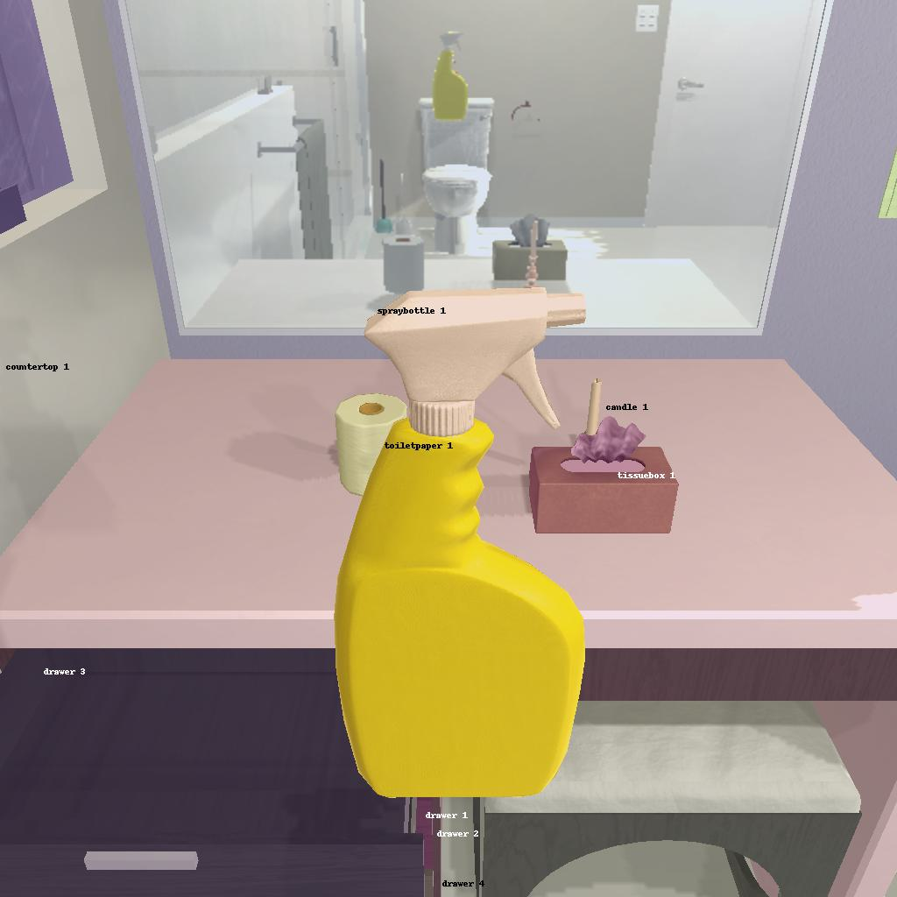

---------------------------------------------------------task: 28---------------------------------------------------------
--------------------------------------------------------------------------------------------------------------------------------------------------------------------
--------------------------------------------------------------------------------------------------------------------------------------------------------------------
Step:--------------------------------------------------------------------------17-------------------------------------------------------------------------------
----------------------------------------
VLM Prompt:
Image1:
Image2:
Image3:
**Instruction**
1. Analyze the provided image to identify all visible household objects, focusing on those relevant to the task description "put two spraybottle in toilet."
2. Use the analysis of the image and the task hint "The agent must find an object of the desired type, pick it up, find the correct location to place it, put it down there, then look for another object of the desired type, pick it up, return to previous location, and put it down there with the other object." to answer the question: what is the most reasonable action in the choices for the task description "put two spraybottle in toilet"?
4. Decide and write the answer using the template: The answer is: (i): , where i is the real number. If there is no desired object in the image, search every place based on **Initial Observation** to find the object. And if no one is exactly correct, choose a similar answer.
**Initial Observation**
You are in the middle of a room. Looking quickly around you, you can see bathtub (1), bathtubbasin (1), cart (1), sink (1), garbagecan (1), sinkbasin (1), countertop (1), drawer (1-4), toilet (1), toiletpaperhanger (1)
**Answer Choices**
(1): go to bathtub 1
(2): go to bathtubbasin 1
(3): go to cart 1
(4): go to sink 1
(5): go to garbagecan 1
(6): go to sinkbasin 1
(7): go to drawer 1
(8): go to drawer 2
(9): go to drawer 3
(10): go to drawer 4
(11): go to toiletpaperhanger 1
(12): put spraybottle 1 in/on toilet 1
(13): examine spraybottle 1
(14): examine toilet 1
**Answer**
Let's think step by step by following the instructions.
----------------------------------------
----------------------------------------
Original Response:
Firstly, we need to identify the visible household objects related to the task. In the images provided, we can see a spraybottle and a toilet, which are relevant to the task "put two spraybottles in toilet."
Next, considering the task hint, the agent must find a spraybottle, pick it up, and find the correct location (toilet) to place it. After putting the first spraybottle in the toilet, the agent must look for another spraybottle, pick it up, and return to the toilet to place it there with the other one.
From the initial observation, we know there is only one toilet (toilet 1), and in the images, we see one spraybottle. Since there is only one spraybottle visible in the images, the agent must search other places based on the initial observation to find the second spraybottle.
Based on these steps, the most reasonable action from the choices provided would be to first put the visible spraybottle in the toilet, as it is the first part of the task. After that, the agent should look for the second spraybottle, which might be in the drawer or other areas not visible in the images.
The answer is: (12): put spraybottle 1 in/on toilet 1. After completing this action, the agent would need to search for the second spraybottle, which is not depicted in the answer choices.
----------------------------------------
----------------------------------------
>>> Refine Original VLM Response and Get Pure Action: put spraybottle 1 in/on toilet 1
----------------------------------------
-----------------------------------------------------------------
Running time: 17.16242241859436 seconds
Total Money: 18.472729999999995
-----------------------------------------------------------------
-----------------------------------------------------------------
Text Observation:You put the spraybottle 1 in/on the toilet 1.
-----------------------------------------------------------------
UNSUCCEED